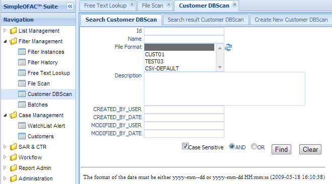
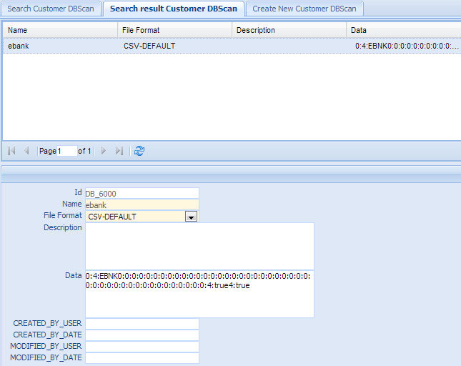
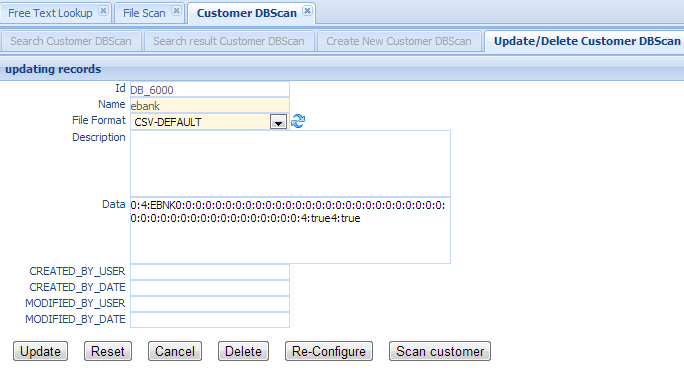
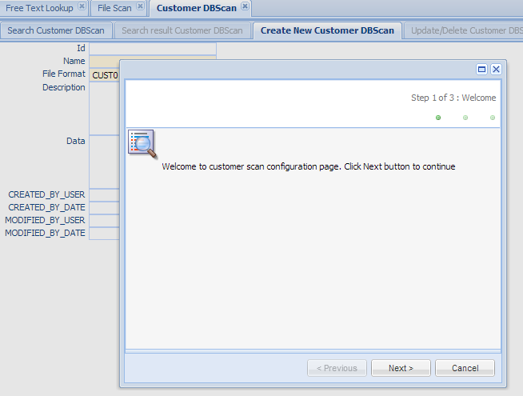
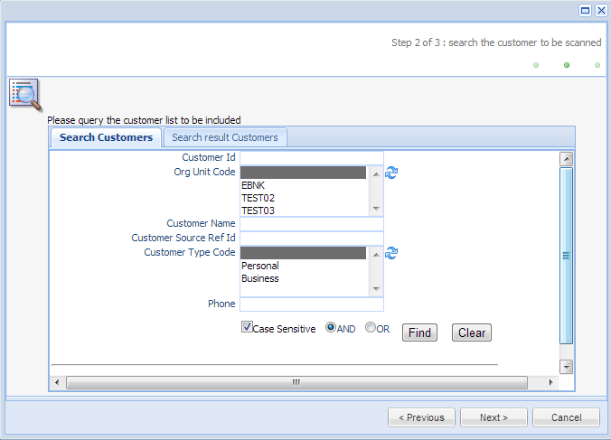
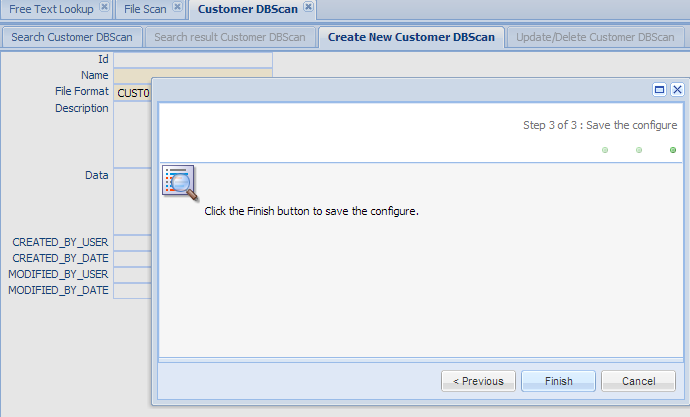
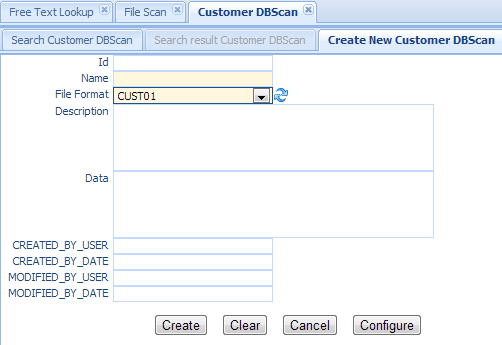

Customer DBScan¶
Customer DBScan allows user to scan customer data in the customer table. Users load the customer data on the regular basis; for example, every day to add new customers or update the current one. When there is a need to scan those customers, user can configure through web interface to set the criteria what kind of customers need to be screened, and those customers will be read and screened and then loaded into watch list alert database for review. The advantage of this approach is that it will display both Customer Information and Watch list alert information side by side, making it easy for investigator to make decision.
Click the Customer DBScan in the left navigation menu under Screening management, a new Customer DBScan Tab folder will be created in the right panel.
There are 3 sub-Tab folders, Search Customer DBScan, Search Result Customer DBScan and Create New Customer DBScan.
Search Customer DBScan¶
Search Criteria
| Field Name | Description |
|---|---|
| Id | unique record identifier |
| Name | Name of this entry |
| File Format | The format of the file; Select a value from the dropdown list. |
| Please see File Format for details. | |
| OrgUnit Code | select a value from the orgunit dropdown list. |
| Description | Description of this entry |
| CreatedByDate | Date and Time when this entry is created |
| CreatedByUser | User who create this entry. |
| ModifiedByDate | Last modified date and time. |
| ModifiedByUser | Last modified user. |
| AND | Select AND radio box if you want those criteria add together. |
| OR | Select OR radio box if you want to get the result if either criteria meet |
Functional buttons¶
- Find: – click Find button to search.
- Clear:– click Clear button to clear all the criteria.
Search Result Customer DBScan¶
The top part is the table, shows the list of the customer DBScan that meet the search criteria. The bottom part is the details of the selected entry.
Update/Delete Customer DBScan¶
Double Click the selected record in the table to modify this entry. A new Tab folder “Update/Delete Customer DBScan” will be added, as show below.
Functional buttons¶
Update: – make changes on the entry, and save and switch back to “Search result customer dbscan” Tab. Some of the fields in this form are read only, like Id, Name, created/modified user and date.
Reset:– reset the data to its initial value, discard all the changes.
Cancel:– Cancel this change and switch back to “Search result customer dbscan” Tab.
Delete:– Delete this entry and switch back to “Search result customer dbscan” Tab.
Re-Configure – Click this button to open a configure wizard to set up the configuration data, as below:
Click Next Button to go to wizard step 2
This is a Customer search case-customer-search panel, allowing user to select the customer entries to be included in this dbscan. It is pre-populated with the data in the Configuration Data field.
Set search criteria; then click Find Button will get a list of customer entries that meet the search criteria. Those customer entries will be included and scanned by screening instance.
Click Next button to go to wizard step 3: Save the configuration

- Click Finish will save the configuration into Configuration Data field.
- Click Cancel to discard those changes.
Scan Customer – Click this button to scan the customers using the customer entries set in the previous step. If there are any alerts, it will be saved in the Watch list alert tables under Case management.
Create New Customer DBScan¶
Select the “Create New Customer DBScan” Tab to create a new entry.
| Field Name | Description |
|---|---|
| Id | unique record identifier |
| Name | Name of this entry |
| File Format | The format of the file; Select a value from the dropdown list. This is a mandatory field. Please see File Format for details. |
| OrgUnit Code | The Orgunit the watch list alert will be saved to. select a value from the orgunit dropdown list. This is a mandatory field. |
| Description | Description of this entry |
| Data | Configuration data to define what customer entries should be included. User has to set the data value via Configure button. |
| CreatedByDate | Date and Time when this entry is created. It is a read only field. |
| CreatedByUser | User who create this this entry. It is a read only field. |
| ModifiedByDate | Last modified date and time; It is a read only field. |
| ModifiedByUser | Last modified user; It is a read only field. |
Functional buttons¶
- Create: – Click the Create button to create a new customer dbscan entry and switch to “Search result Customer DBScan” Tab. Name, File Format and OrgUnit Code are mandatory fields, if any of them is empty, an error message will show. Data field must be set via Configure Button. If Data field is empty, all the customer entries will be included.
- Clear:– Click the Clear button to clear all the fields
- Cancel:– Click the Cancel button to cancel operation and switch back to “Search result Screening Instance” Tab.
- Configure –Click the Configure button to open a configure wizard to set up the configuration data. (see Re-Configure in Update/Delete Customer DBScan Update/Delete Customer DBScan).